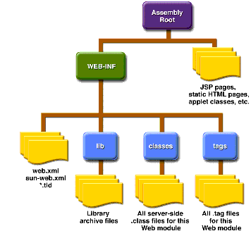
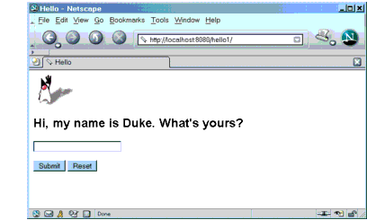

Web Modules
In the J2EE architecture, web components and static web content files such as images are called web resources. A web module is the smallest deployable and usable unit of web resources. A J2EE web module corresponds to a web application as defined in the Java Servlet specification.
In addition to web components and web resources, a web module can contain other files:
A web module has a specific structure. The top-level directory of a web module is the document root of the application. The document root is where JSP pages, client-side classes and archives, and static web resources, such as images, are stored.
The document root contains a subdirectory named
/WEB-INF/, which contains the following files and directories:
web.xml: The web application deployment descriptor- Tag library descriptor files (see Tag Library Descriptors)
classes: A directory that contains server-side classes: servlets, utility classes, and JavaBeans componentstags: A directory that contains tag files, which are implementations of tag libraries (see Tag File Location)lib: A directory that contains JAR archives of libraries called by server-side classesYou can also create application-specific subdirectories (that is, package directories) in either the document root or the
/WEB-INF/classes/directory.A web module can be deployed as an unpacked file structure or can be packaged in a JAR file known as a web archive (WAR) file. Because the contents and use of WAR files differ from those of JAR files, WAR file names use a
.warextension. The web module just described is portable; you can deploy it into any web container that conforms to the Java Servlet Specification.To deploy a WAR on the Application Server, the file must also contain a runtime deployment descriptor. The runtime deployment descriptor is an XML file that contains information such as the context root of the web application and the mapping of the portable names of an application's resources to the Application Server's resources. The Application Server web application runtime DD is named
sun-web.xmland is located in /WEB-INF/along with the web application DD. The structure of a web module that can be deployed on the Application Server is shown in Figure 3-5.

Figure 3-5 Web Module Structure
Packaging Web Modules
A web module must be packaged into a WAR in certain deployment scenarios and whenever you want to distribute the web module. You package a web module into a WAR using the Application Server
deploytoolutility, by executing thejarcommand in a directory laid out in the format of a web module, or by using theasantutility. This tutorial allows you to use use either the first or the third approach. To build thehello1application, follow these steps:To package the application into a WAR named
hello1.warusingasant, use the following command:This command uses
web.xmlandsun-web.xmlfiles in the<INSTALL>/j2eetutorial14/examples/web/hello1directory.To learn how to configure this web application, package the application using
deploytoolby following these steps:
- Start
deploytool.- Create a web application called
hello1by running the New Web Component wizard. Select FileNew
- In the New Web Component wizard:
- Select the Create New Stand-Alone WAR Module radio button.
- In the WAR File field, enter
<INSTALL>/j2eetutorial14/examples/web/hello1/hello1.war. The WAR Display Name field will showhello1.- In the Context Root field, enter
/hello1.- Click Edit Contents to add the content files.
- In the Edit Contents dialog box, navigate to
<INSTALL>/j2eetutorial14/examples/web/hello1/build/. Selectduke.waving.gif,index.jsp, andresponse.jspand click Add. Click OK.- Click Next.
- Select the No Component radio button and click Next.
- Click Finish.
- Select File
A sample
hello1.waris provided in<INSTALL>/j2eetutorial14/examples/web/provided-wars/. To open this WAR withdeploytool, follow these steps:Deploying Web Modules
You can deploy a web module to the Application Server in several ways:
All these methods are described briefly in this chapter; however, throughout the tutorial, we use
deploytoolorasantfor packaging and deploying.Setting the Context Root
A context root identifies a web application in a J2EE server. You specify the context root when you deploy a web module. A context root must start with a forward slash
(/)and end with a string.In a packaged web module for deployment on the Application Server, the context root is stored in
sun-web.xml. If you package the web application withdeploytool, thensun-web.xmlis created automatically.Deploying an Unpackaged Web Module
It is possible to deploy a web module without packaging it into a WAR. The advantage of this approach is that you do not need to rebuild the package every time you update a file contained in the web module. In addition, the Application Server automatically detects updates to JSP pages, so you don't even have to redeploy the web module when they change.
However, to deploy an unpackaged web module, you must create the web module directory structure and provide the web application deployment descriptor
web.xml. Because this tutorial usesdeploytoolfor generating deployment descriptors, it does not document how to develop descriptors from scratch. You can view the structure of deployment descriptors in three ways:
- In
deploytool, select Toolsweb.xmland Toolssun-web.xml.- Use a text editor to view the
web.xmlandsun-web.xmlfiles in the example directories.- Unpackage one of the WARs in
<INSTALL>/j2eetutorial14/examples/web/provided-wars/and extract the descriptors.Since you explicitly specify the context root when you deploy an unpackaged web module, usually it is not necessary to provide
sun-web.xml.Deploying with the Admin Console
- Expand the Applications node.
- Select the Web Applications node.
- Click the Deploy button.
- Select the No radio button next to Upload File.
- Type the full path to the web module directory in the File or Directory field. Although the GUI gives you the choice to browse to the directory, this option applies only to deploying a packaged WAR.
- Click Next.
- Type the application name.
- Type the context root.
- Select the Enabled box.
- Click the OK button.
Deploying with asadmin
To deploy an unpackaged web module with
asadmin, open a terminal window or command prompt and executeThe
buildtask for thehello1application creates abuilddirectory (includingweb.xml) in the structure of a web module. To deployhello1usingasadmin deploydir, execute:After you deploy the
hello1application, you can run the web application by pointing a browser atYou should see the greeting form depicted earlier in Figure 3-3.
A web module is executed when a web browser references a URL that contains the web module's context root. Because no web component appears in
http://localhost:8080/hello1/, the web container executes the default component,index.jsp. The section Mapping URLs to Web Components describes how to specify web components in a URL.Deploying a Packaged Web Module
If you have deployed the
hello1application, before proceeding with this section, undeploy the application by following one of the procedures described in Undeploying Web Modules.Deploying with deploytool
To deploy the
hello1web module withdeploytool:
- Select the
hello1WAR you created in Packaging Web Modules.- Select Tools
- Click OK.
You can use one of the following methods to deploy the WAR you packaged with
deploytool, or one of the WARs contained in<INSTALL>/j2eetutorial14/examples/web/provided-wars/.Deploying with the Admin Console
- Expand the Applications node.
- Select the Web Applications node.
- Click the Deploy button.
- Select the No radio button next to Upload File.
- Type the full path to the WAR file (or click on Browse to find it), and then click the OK button.
- Click Next.
- Type the application name.
- Type the context root.
- Select the Enabled box.
- Click the OK button.
Deploying with asadmin
To deploy a WAR with
asadmin, open a terminal window or command prompt and executeDeploying with asant
To deploy a WAR with
asant, open a terminal window or command prompt in the directory where you built and packaged the WAR, and executeListing Deployed Web Modules
The Application Server provides three ways to view the deployed web modules:
Updating Web Modules
A typical iterative development cycle involves deploying a web module and then making changes to the application components. To update a deployed web module, you must do the following:
Updating an Unpackaged Web Module
To update an unpackaged web module using either of the methods discussed in Deploying an Unpackaged Web Module, reexecute the
deploydiroperation. If you have changed only JSP pages in the web module directory, you do not have to redeploy; simply reload the URL in the client.Updating a Packaged Web Module
This section describes how to update the
hello1web module that you packaged withdeploytool.First, change the greeting in the file
<INSTALL>/j2eetutorial14/examples/web/hello1/web/index.jsptoRun
asantbuildto copy the modified JSP page into thebuilddirectory. To update the web module usingdeploytoolfollow these steps:To view the modified module, reload the URL in the browser.
You should see the screen in Figure 3-6 in the browser.

Dynamic Reloading
If dynamic reloading is enabled, you do not have to redeploy an application or module when you change its code or deployment descriptors. All you have to do is copy the changed JSP or class files into the deployment directory for the application or module. The deployment directory for a web module named
context_rootis<J2EE_HOME>/domains/domain1/applications/j2ee-modules/context_root. The server checks for changes periodically and redeploys the application, automatically and dynamically, with the changes.This capability is useful in a development environment, because it allows code changes to be tested quickly. Dynamic reloading is not recommended for a production environment, however, because it may degrade performance. In addition, whenever a reload is done, the sessions at that time become invalid and the client must restart the session.
To enable dynamic reloading, use the Admin Console:
- Select the Applications Server node.
- Select the Advanced tab.
- Check the Reload Enabled box to enable dynamic reloading.
- Enter a number of seconds in the Reload Poll Interval field to set the interval at which applications and modules are checked for code changes and dynamically reloaded.
- Click the Save button.
In addition, to load new servlet files or reload deployment descriptor changes, you must do the following:
For JSP pages, changes are reloaded automatically at a frequency set in the Reload Pool Interval. To disable dynamic reloading of JSP pages, set the reload-interval property to -1.
Undeploying Web Modules
You can undeploy web modules in four ways:
All of the material in The J2EE(TM) 1.4 Tutorial is copyright-protected and may not be published in other works without express written permission from Sun Microsystems.